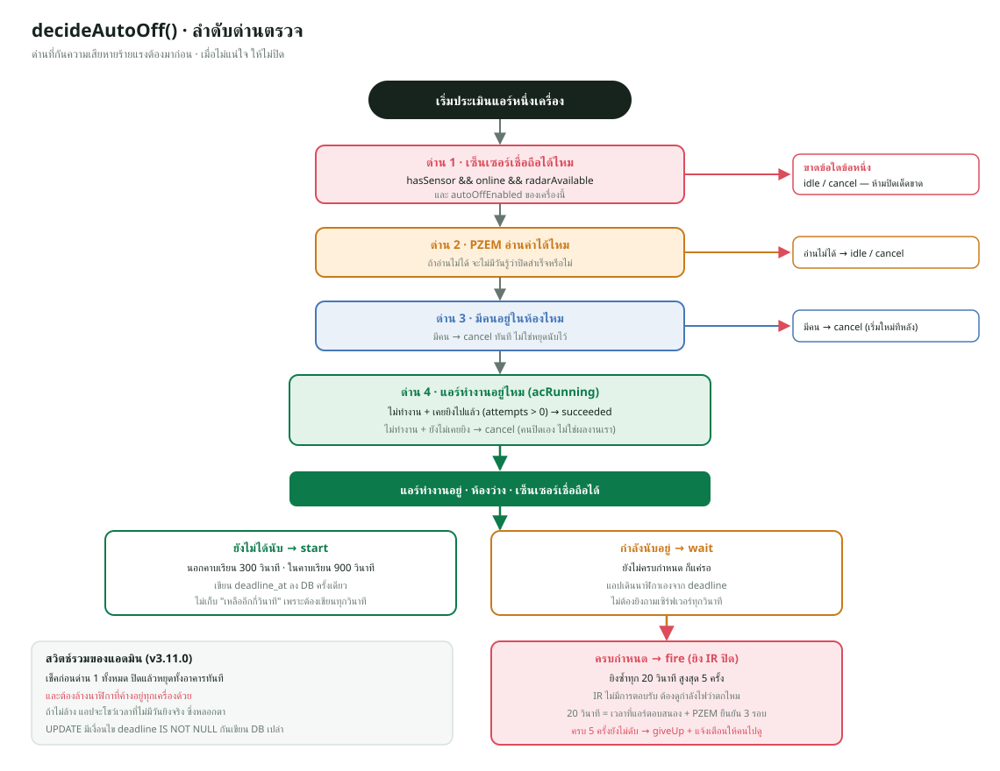
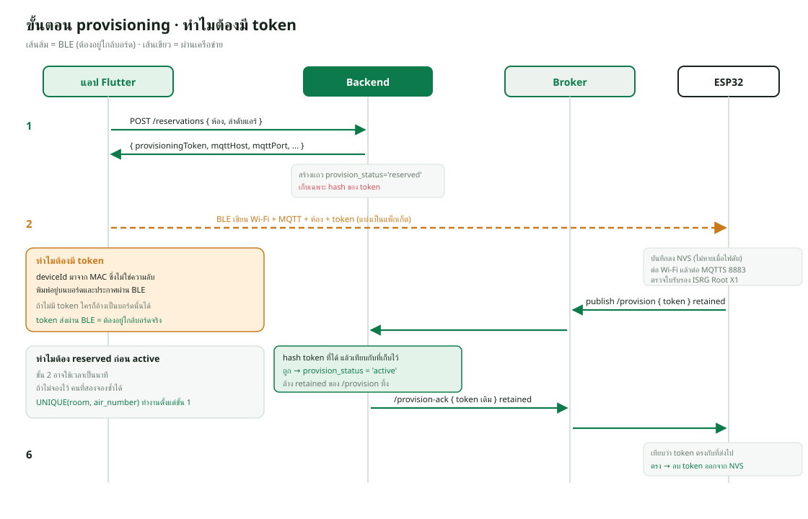

สถาปัตยกรรมและเส้นทางของข้อมูล
ภาพรวม#
บทนี้เป็น "แผนที่" ของทั้งระบบ ก่อนลงรายละเอียดแต่ละส่วนในบทถัดไป เราจะดู 3 เรื่อง: ใครคุยกับใคร ด้วยภาษาอะไร, ข้อมูลไหลอย่างไรในสถานการณ์จริง 7 แบบ และ ไฟล์ไหนรับผิดชอบแต่ละขั้น
ถ้าเข้าใจเส้นทางทั้ง 7 เส้นในบทนี้ คุณจะตอบคำถามอาจารย์ได้เกือบทุกข้อที่ขึ้นต้นด้วย "ถ้าผู้ใช้กด... แล้วเกิดอะไรขึ้น"
องค์ประกอบทั้งหมดของระบบ#
┌───────────────────────── เซิร์ฟเวอร์ (Docker) ─────────────────────────┐
แอป Flutter ───────────┤ ทางเข้า A: Funnel *.ts.net:443 ─► tailscale ─► caddy:8080 │
(Android/Windows) │ ทางเข้า B: duckdns.org:443 (ในมหาวิทยาลัย) ─► caddy:443 │
เว็บแอป (เบราว์เซอร์) ──┤ caddy ──/api/*──► backend:3000 ──► db (MariaDB) │
│ (เว็บ + ไฟล์เฟิร์มแวร์ /firmware) │ │
│ ▼ mqtt:1883 (ภายใน Docker) │
│ ทางเข้า C: Funnel *.ts.net:8443 ─► tailscale ถอด TLS ─► mqtt:1883 │
│ ทางเข้า D: duckdns.org:8883 (ในมหาวิทยาลัย) ─► mqtt (TLS ของ Mosquitto) │
└──────────────────────────────▲─────────────────────────────────────┘
│ MQTTS ค่าเริ่มต้น = ทางเข้า C (ts.net:8443)
┌────────────────────────┴───────────────┐
บอร์ดแอร์ ESP32-<MAC> บอร์ดตรวจจับคน OCC32-<MAC>
IR ─► แอร์, PZEM ◄─ สายไฟแอร์ LD2410 เรดาร์
แอป Flutter ──BLE (เฉพาะตอนตั้งค่า)──► บอร์ดทั้งสองแบบ
ใครคุยกับใคร ด้วยโปรโตคอลอะไร#
| จาก | ถึง | โปรโตคอล / พอร์ต | ใช้ทำอะไร | ไฟล์หลัก |
|---|---|---|---|---|
| แอป Flutter | Backend | HTTPS + JSON (REST) พร้อม JWT | ทุกอย่างที่ผู้ใช้ทำ | lib/services/*_service.dart |
| เว็บแอป | Backend | HTTPS /api โดเมนเดียวกัน |
ทุกอย่างที่ผู้ใช้ทำ | webapp/assets/js/api.js |
| Caddy | Backend | HTTP ภายใน Docker backend:3000 |
ส่งต่อคำขอ /api/* |
deploy/Caddyfile |
| Backend | MariaDB | MariaDB protocol db:3306 |
อ่าน/เขียนข้อมูล | backend/src/db.js |
| Backend | Mosquitto | MQTT mqtt:1883 (ภายใน) |
ส่งคำสั่ง รับสถานะ | backend/src/services/mqtt.js |
| บอร์ด ESP32 | Mosquitto | MQTTS (TLS) ผ่าน Tailscale Funnel *.ts.net:8443 (ค่าเริ่มต้น) หรือ duckdns.org:8883 ในมหาวิทยาลัย |
ส่งสถานะ รับคำสั่ง | firmware/*/*.ino, deploy/tailscale-serve.json |
| กล่อง tailscale | Mosquitto | ถอด TLS แล้วส่ง MQTT ธรรมดาไป mqtt:1883 ภายใน Docker |
ทางผ่านของบอร์ด | deploy/tailscale-serve.json |
| บอร์ด ESP32 | Caddy | HTTPS 443 /firmware/*.bin บนโฮสต์เดียวกับ Broker (ผ่าน Funnel 443 → caddy:8080 เมื่อใช้ ts.net) |
ดาวน์โหลดเฟิร์มแวร์ใหม่ (OTA) | firmware/*/ota_update.h |
| แอป Flutter | บอร์ด ESP32 | Bluetooth Low Energy (GATT) | ตั้งค่า Wi-Fi/บัญชี MQTT ครั้งแรก | lib/services/ble_provisioning_service.dart |
| บอร์ดแอร์ | แอร์ | อินฟราเรด 38 kHz | สั่งเปิด/ปิด/ปรับ | IRremoteESP8266, SaijoDenkiAC.cpp |
| บอร์ดแอร์ | PZEM-004T | UART (Modbus) | อ่านแรงดัน กระแส กำลัง พลังงาน | rmutt_esp32_air.ino |
| บอร์ดตรวจจับคน | LD2410 | UART 256000 baud | อ่านค่าเรดาร์ | rmutt_esp32_occupancy.ino |
แอปและเว็บไม่เคยคุยกับบอร์ดหรือฐานข้อมูลโดยตรง (ยกเว้น BLE ตอนติดตั้ง) ทุกอย่างผ่าน Backend จึงมี จุดตรวจสิทธิ์จุดเดียว และ ข้อมูลจริงอยู่ที่เดียว ถ้าวันหนึ่งเปลี่ยนฐานข้อมูลหรือเปลี่ยนบอร์ด แอปไม่ต้องแก้
เส้นทางที่ 1: ผู้ใช้กด "เปิดแอร์ 25°C" ในแอป#
[แอป] AirControlCard ─► AirConditionerController.sendCommand ─► AirConditionerService
│ POST /api/air-conditioners/ESP32-XXXX/command body: { power:true, temperature:25, mode:"cool", ... }
▼
[Caddy] ─► [Backend] authenticate (ตรวจ JWT) ─► routes/air-conditioners.js
│ ตรวจว่าเครื่องมีอยู่และ provision_status = 'active'
│ validateAirState() ตรวจค่าทุกช่อง
│ publishAirCommand() ──MQTT QoS1──► rmutt/ac/ESP32-XXXX/command
│ ตอบ 202 Accepted { commandId }
▼
[Mosquitto] ─► [บอร์ดแอร์] mqttCallback() เก็บข้อความไว้ → loop() เรียก processMqttCommand()
│ ตรวจช่วงอุณหภูมิ (Saijo 18–29°C, รุ่นอื่น 16–30°C) และโหมด
│ saveAirState() จำลง NVS → sendCurrentIrState() ยิง IR → publishState(commandId)
▼
[แอร์] รับสัญญาณ IR แล้วเปิด
│
[บอร์ดแอร์] ─► rmutt/ac/ESP32-XXXX/state (retained) และ /status ทุก 10 วินาที
▼
[Backend] mqtt.js: 'state' → UPDATE air_conditioners SET state_json ...
▼
[แอป] ดึง /api/rooms ใหม่ทุก 10 วินาที → การ์ดแอร์แสดงสถานะล่าสุด
ประเด็นที่ควรอธิบายได้
- ทำไมตอบ 202 ไม่ใช่ 200: 202 แปลว่า "รับคำสั่งแล้ว กำลังดำเนินการ" Backend ส่งต่อให้บอร์ดแล้ว แต่ยังไม่รู้ว่าแอร์เปิดจริงหรือยัง ผลจริงจะมาทาง
/stateและ/status - ทำไมบอร์ดไม่ประมวลผลใน callback ทันที:
mqttCallbackแค่คัดลอกข้อความและตั้งธงmqttCommandReadyแล้วให้loop()ทำงานหนัก (แปลง JSON ยิง IR) เพื่อไม่ให้ callback ของไลบรารีค้างนาน - ตรวจซ้ำสองฝั่ง: Backend ตรวจค่า (
validateAirState) และบอร์ดตรวจอีกรอบ เพราะบอร์ดไม่ควรเชื่อข้อความที่มาทางเครือข่ายโดยไม่ตรวจ - รู้ได้อย่างไรว่าแอร์ทำงานจริง: จากกำลังไฟที่ PZEM วัด (≥ 30 W ติดกัน 3 ครั้ง = ทำงาน) ไม่ใช่จากว่ายิง IR แล้ว เพราะ IR ส่งทางเดียว ไม่มีการตอบรับจากแอร์
เส้นทางที่ 2: วัดไฟ → เก็บเป็นถังรายชั่วโมง → กราฟ#
[บอร์ดแอร์] อ่าน PZEM ทุก 2 วินาที (แรงดัน กระแส กำลัง พลังงานสะสม ความถี่ PF)
│ ตัดสิน ac_running ด้วย hysteresis: ≥30 W ×3 = ทำงาน, ≤10 W ×3 = หยุด
│ ส่ง /status ทุก 10 วินาที (และส่งทันทีเมื่อมีเหตุการณ์)
▼
[Backend] mqtt.js handleAirStatus() (ทำทีละข้อความต่อเครื่อง ด้วย runSerialForDevice)
│ 1. readPreviousAirRow() อ่านค่ามิเตอร์ "ครั้งก่อน" จาก DB
│ 2. recordEnergySample() หาผลต่าง (ใหม่ − เก่า) แล้วบวกเข้าถังชั่วโมงนั้นใน energy_hourly
│ 3. UPDATE air_conditioners เขียนค่าล่าสุดทับ
│ 4. แจ้ง auto-off ให้ประเมินใหม่
▼
[MariaDB] energy_hourly: 1 แถว ต่อ 1 เครื่อง ต่อ 1 ชั่วโมง (เวลาไทย)
▼
[แอป/เว็บ] GET /api/energy/summary, /history, /live → กราฟ, ค่าไฟ = kWh × อัตรา (ค่าเริ่มต้น 4.50 บาท)
ลำดับ อ่านค่าเก่า → คำนวณผลต่าง → ค่อยเขียนทับ สำคัญมาก ถ้าเขียนทับก่อนจะไม่เหลือค่าเก่าให้ลบ และค่าที่บันทึกจะกลายเป็นพลังงานสะสมทั้งหมดตั้งแต่ติดตั้ง แทนที่จะเป็นของชั่วโมงนั้น นอกจากนี้ถ้าผลต่างติดลบ (มิเตอร์ถูกรีเซ็ต) หรือมากผิดปกติ (เกิน 50 kWh) ระบบจะนับเป็น 0 เพื่อกันข้อมูลเพี้ยน
เส้นทางที่ 3: ห้องว่าง → ปิดแอร์อัตโนมัติ#

[บอร์ดตรวจจับคน] อ่าน LD2410 ทุก 250 ms
│ มีคน = มีเกต 0–8 เกตใดเกตหนึ่งที่ static energy > 25
│ ส่ง rmutt/occupancy/OCC32-XXXX/status ทุก 10 วินาที และทันทีเมื่อเปลี่ยน
▼
[Backend] mqtt.js → UPDATE occupancy_sensors → แจ้ง services/auto-off.js
│ auto-off ยังประเมินซ้ำเองทุก 10 วินาทีด้วย (TICK_INTERVAL_MS)
▼
[Backend] utils/auto-off.js decideAutoOff() — ฟังก์ชันบริสุทธิ์ ตรวจทีละด่าน
│ เซนเซอร์มีและออนไลน์และเรดาร์ใช้ได้? เปิดฟีเจอร์รายเครื่อง? PZEM อ่านได้?
│ ไม่มีคน? แอร์ยังเดินอยู่?
│ → ยังไม่นับ: เริ่มนับถอยหลัง (นอกคาบ 300 วิ / ในคาบเรียน 900 วิ)
│ → ครบเวลา: ส่งคำสั่งปิด (power:false) ไป /command
│ → แอร์ยังเดิน: ยิงซ้ำทุก 20 วิ สูงสุด 5 ครั้ง แล้วยอมแพ้ + แจ้งเตือน auto_off_failed
│ → กำลังไฟลดลงหลังยิง: สำเร็จ + แจ้งเตือน auto_off_succeeded
│ → มีคนกลับมาระหว่างนับ: ยกเลิกการนับ
▼
[แอป/เว็บ] แสดงนาฬิกานับถอยหลังบนการ์ดแอร์ และรายการแจ้งเตือน
ทุกด่านแรก ๆ เป็นการตรวจว่า "ข้อมูลเชื่อได้ไหม" ถ้าเรดาร์ออฟไลน์หรือ PZEM อ่านไม่ได้ ระบบเลือก ไม่ปิด เพราะการปิดแอร์ตอนมีคนเรียนอยู่เสียหายกว่าการเปิดค้างอีกไม่กี่นาที (หลัก fail-safe) และการตัดสินใจถูกเขียนเป็นฟังก์ชันบริสุทธิ์ใน utils/auto-off.js จึงเขียนเทสต์ครอบได้ทุกกรณีใน backend/test/auto-off.test.js
Backend ใช้ล็อกของ MariaDB ชื่อ rmutt_auto_off_runner (GET_LOCK) เพื่อให้มีตัวประเมินทำงานทีละตัว ถ้าวันหนึ่งรัน Backend สองตัว จะไม่ส่งคำสั่งปิดซ้ำกัน
เส้นทางที่ 4: ติดตั้งบอร์ดใหม่ (Provisioning)#

แอดมิน แอป Flutter Backend บอร์ด ESP32 ใหม่
│ เลือกห้อง → │ POST /api/air-conditioners/reservations →│ จองช่อง (status=reserved)
│ │ ◄── deviceId, ค่า MQTT, token (15 นาที) ──│ สร้างบัญชี MQTT ของบอร์ด
│ │ สแกน BLE หา "RMUTT-AC-<MAC>" ───────────────────────────► │ (โฆษณาตัวอยู่)
│ │ อ่าน characteristic Wi-Fi ใกล้เคียง ◄──────────────────── │ สแกน Wi-Fi
│ เลือก Wi-Fi + ใส่รหัส → │ เขียน config เป็นชิ้น ๆ (150 ไบต์/ชิ้น) ──────► │ ประกอบ JSON, ทดสอบ Wi-Fi
│ │ ◄────────────── notify: บันทึกสำเร็จ ─────────────────── │ เก็บลง NVS
│ │ │ ◄── MQTTS: /provision (token) ── │ ต่อ Wi-Fi + Broker
│ │ │ ตรวจ token → status=active │
│ │ │ ── /provision-ack ──────────────►│ ลบ token ทิ้ง
│ │ ดึง /api/rooms → เห็นบอร์ดออนไลน์ │ เริ่มทำงานปกติ
จุดที่ควรเข้าใจ
- ที่อยู่ Broker ที่บอร์ดได้รับ มาจากตัวแปร
MQTT_DEVICE_URLในdeploy/docker-compose.ymlค่าเริ่มต้นคือmqtts://rmutt-energy.tailb292b4.ts.net:8443(ผ่าน Tailscale Funnel) บอร์ดจึงอยู่ Wi-Fi ไหนก็ได้ที่ออกอินเทอร์เน็ตได้ ถ้าจะให้บอร์ดในมหาวิทยาลัยต่อตรง ตั้งเป็นmqtts://<DOMAIN>:8883ใน.envแล้วตั้งค่าบอร์ดใหม่ - แอปไม่ส่งรหัสผ่าน MQTT ที่ผู้ใช้พิมพ์เอง ค่าทั้งหมดมาจาก Backend ผู้ใช้กรอกแค่รหัส Wi-Fi
- token ใช้ครั้งเดียว อายุ 15 นาที Backend เก็บแค่ค่า hash จึงใช้พิสูจน์ได้ว่าบอร์ดตัวนี้คือตัวที่แอดมินเพิ่งตั้งค่า
- บัญชี MQTT รายบอร์ด รหัสคำนวณจาก
HMAC-SHA256(MQTT_DEVICE_SECRET, deviceId)บอร์ดเห็นได้เฉพาะ topic ของตัวเอง
เส้นทางที่ 5: เข้าสู่ระบบ#
[แอป/เว็บ] POST /api/auth/login { username, password }
▼
[Backend] loginLimiter (ผิดได้ 10 ครั้ง / 15 นาที / IP)
│ SELECT users → bcrypt.compare (ถ้าไม่มีผู้ใช้ ก็ยังเทียบกับ hash หลอก เพื่อให้ใช้เวลาเท่ากัน)
│ ออก JWT (HS256, อายุ 8 ชม.) ใส่ sub=username, role, ver=token_version
▼
[แอป] เก็บ token ใน flutter_secure_storage [เว็บ] เก็บใน localStorage
│ ทุกคำขอต่อไปส่ง Header: Authorization: Bearer <token>
▼
[Backend] authenticate.js ตรวจลายเซ็น + อายุ แล้วอ่านผู้ใช้จาก DB ทุกครั้ง
│ ถ้า is_active = 0 หรือ token_version ไม่ตรง (เช่นเพิ่งเปลี่ยนรหัส) → 401
เส้นทางที่ 6: เน็ตหลุด → บอร์ดเก็บข้อมูลไว้เอง → ส่งย้อนหลัง#
[บอร์ดแอร์] ต่อเซิร์ฟเวอร์ไม่ได้ → สรุปค่าไฟทุก 5 นาที เก็บลงพาร์ติชัน flash "rmuttlog" (64 KB)
│ รายการละ 32 ไบต์ เก็บได้ 2,048 รายการ ≈ 7 วัน (เต็มแล้วทับของเก่าสุด)
▼ เน็ตกลับมา
│ รอสุ่ม 5–45 วินาที (กันทั้งตึกส่งพร้อมกัน)
│ ส่ง /history ทีละ 10 รายการ → รอ /history-ack { upTo } ภายใน 20 วินาที
▼
[Backend] ตรวจ (ไม่เก่ากว่า 31 วัน, ไม่ล้ำอนาคต) → ลงถังรายชั่วโมงแบบไม่นับซ้ำ → ส่ง ack
▼
[บอร์ดแอร์] ได้ ack แล้วจึงลบชุดนั้น จำตำแหน่งที่ยืนยันแล้วใน NVS แล้วส่งชุดถัดไป
"ลบหลังได้ ack เท่านั้น" คือหลักเดียวกับการส่งพัสดุแบบมีใบตอบรับ ถ้าส่งแล้วลบเลยแต่ข้อความหาย ข้อมูลจะหายถาวร ส่วนฝั่ง Backend ต้องรับข้อมูลซ้ำได้โดยไม่นับซ้ำ (idempotent) เพราะบอร์ดอาจส่งชุดเดิมอีกครั้งถ้า ack หาย
เส้นทางที่ 7: อัปเดตเฟิร์มแวร์ผ่าน Wi-Fi (OTA)#
[ผู้ดูแล] คอมไพล์ .bin → scp ไปไว้ /opt/rmutt/firmware/ บนเซิร์ฟเวอร์
[เว็บแอป] หน้าห้องและอุปกรณ์ → กด "อัปเดตเฟิร์มแวร์" (เฉพาะ admin)
[Backend] POST /api/air-conditioners/:id/ota → MQTT /command { action:"ota", url }
[บอร์ด] ตรวจว่า URL อยู่บนโดเมนเดียวกับ Broker (ค่าเริ่มต้นคือ ts.net จึงวิ่งผ่าน Funnel 443 → caddy:8080)
→ ดาวน์โหลด HTTPS (ตรวจใบรับรองด้วย root CA ของ Let's Encrypt ในเฟิร์มแวร์ ใบ ts.net ก็ออกโดย Let's Encrypt)
→ เขียนลงช่องแอปอีกช่อง (มี 2 ช่องสำหรับ OTA) → รีบูตเข้าเวอร์ชันใหม่ → รายงานเวอร์ชันใน /status
แผนที่ "ข้อมูลอยู่ที่ไหน"#
| ข้อมูล | ที่เก็บจริง | ใครเขียน | ใครอ่าน |
|---|---|---|---|
| บัญชีผู้ใช้, รหัสผ่าน (hash) | ตาราง users |
Backend (routes/auth.js, routes/users.js) |
Backend |
| ห้อง | rooms |
แอดมินผ่าน API, นำเข้าตารางเรียน | ทุกหน้าจอ |
| แอร์และสถานะล่าสุด | air_conditioners |
services/mqtt.js |
แอป/เว็บผ่าน /api/rooms |
| เซนเซอร์และมีคนไหม | occupancy_sensors |
services/mqtt.js |
auto-off, หน้าจอ |
| ค่าไฟรายชั่วโมง | energy_hourly |
services/energy-recorder.js |
/api/energy/* |
| ตารางเรียน, ภาคเรียน, การจองห้อง | class_schedules, academic_terms, room_bookings |
แอดมิน | auto-off, หน้าตารางเรียน |
| การแจ้งเตือน | system_alerts |
services/alerts.js, auto-off |
หน้าการแจ้งเตือน |
| ค่าตั้งระบบ (อัตราค่าไฟ, สวิตช์ auto-off) | system_settings |
แอดมิน | Backend |
| Wi-Fi, ห้อง, บัญชี MQTT ของบอร์ด | NVS ในบอร์ด | ตอน provisioning | เฟิร์มแวร์ |
| ค่าไฟตอนเน็ตหลุด | พาร์ติชัน rmuttlog ในบอร์ด |
เฟิร์มแวร์ | ส่งไป Backend |
| token เข้าสู่ระบบ | secure storage (แอป), localStorage (เว็บ) | หน้าล็อกอิน | ทุกคำขอ API |
| secret ของเซิร์ฟเวอร์ | /opt/rmutt/.env |
init-env.sh |
docker compose |
ตัวเลขสำคัญที่ควรจำ#
| ค่า | ตัวเลข | อยู่ที่ไหน |
|---|---|---|
| รอบอ่าน PZEM | 2 วินาที | เฟิร์มแวร์แอร์ |
| ส่งสถานะบอร์ด | ทุก 10 วินาที + ทันทีเมื่อเปลี่ยน | เฟิร์มแวร์ทั้งสอง |
| เกณฑ์แอร์ทำงาน / หยุด | ≥ 30 W ×3 / ≤ 10 W ×3 | เฟิร์มแวร์แอร์ |
| เกณฑ์มีคน | static energy เกตใดเกตหนึ่ง > 25 | เฟิร์มแวร์ตรวจคน |
| นับถอยหลังนอกคาบ / ในคาบ | 300 / 900 วินาที | utils/auto-off.js |
| ยิงซ้ำ | ทุก 20 วินาที สูงสุด 5 ครั้ง | utils/auto-off.js |
| รอบประเมิน auto-off | 10 วินาที | services/auto-off.js |
| แอป/เว็บดึงข้อมูลห้องใหม่ | ทุก 10 วินาที | controllers, webapp/assets/js/config.js |
| อายุ JWT / OTP / token ติดตั้ง | 8 ชม. / 10 นาที / 15 นาที | config.js, routes |
| ล็อกอินผิด | 10 ครั้ง / 15 นาที | routes/auth.js |
| บันทึกในบอร์ดตอนเน็ตหลุด | 5 นาที/รายการ, 2,048 รายการ ≈ 7 วัน | history_log.h |
| สำรองฐานข้อมูล | ทุกวัน 02:30 เก็บ 14 วัน | backup-db.sh, cron |
คำถามที่อาจารย์อาจถาม#
ถาม: ถ้าผู้ใช้สองคนกดสั่งแอร์เครื่องเดียวกันพร้อมกัน จะเกิดอะไร?
ตอบ: Backend ส่งคำสั่งทั้งสองไปตามลำดับที่มาถึง แต่ละคำสั่งมี commandId ไม่ซ้ำกัน บอร์ดทำทีละคำสั่ง คำสั่งที่มาถึงทีหลังจะเป็นสถานะสุดท้าย และบอร์ดรายงานสถานะจริงกลับทาง /state ทุกหน้าจอจึงเห็นค่าเดียวกันในรอบดึงข้อมูลถัดไป
ถาม: แอปรู้ได้อย่างไรว่าบอร์ดออฟไลน์?
ตอบ: ตอนบอร์ดต่อ Broker มันฝาก Last Will ไว้ที่ topic /status เป็น {online:false} แบบ retained ถ้าบอร์ดหลุด (ไฟดับ, Wi-Fi หาย) Broker จะประกาศข้อความนี้แทน Backend รับแล้วบันทึกว่าออฟไลน์ แอปเห็นในรอบดึงข้อมูลถัดไป
ถาม: ทำไมแอปใช้วิธีดึงข้อมูลซ้ำทุก 10 วินาที ไม่ใช้ระบบ push?
ตอบ: ง่ายและทนทานกว่าสำหรับขนาดระบบนี้ครับ ไม่ต้องดูแลการเชื่อมต่อค้าง (WebSocket) ผ่าน proxy หลายชั้น และข้อมูลแอร์เปลี่ยนไม่บ่อย 10 วินาทีถือว่าสดพอ ถ้าระบบใหญ่ขึ้นค่อยเปลี่ยนเป็น WebSocket หรือ Server-Sent Events
ถาม: จุดไหนของระบบเป็น single point of failure?
ตอบ: เซิร์ฟเวอร์เครื่องเดียว (Backend + DB + Broker) ครับ ถ้าล่ม การสั่งจากแอปและ auto-off หยุด แต่แอร์ยังใช้รีโมตได้ และบอร์ดแอร์เก็บค่าไฟไว้ได้ราว 7 วัน ส่วนข้อมูลมีสำรองรายวัน ทางแก้ในอนาคตคือทำเครื่องสำรอง หรือใช้ snapshot ของ VM
สรุปและเช็กลิสต์ความเข้าใจ#
- วาดแผนภาพองค์ประกอบทั้งหมดได้ พร้อมโปรโตคอลบนแต่ละเส้น
- เล่าเส้นทาง "กดเปิดแอร์" ได้ครบตั้งแต่แอปถึงแอร์และกลับมา
- อธิบายได้ว่าทำไมต้องอ่านค่ามิเตอร์เก่าก่อนเขียนทับ
- บอกด่านตรวจของ auto-off ได้ และอธิบายหลัก fail-safe
- เล่าขั้นตอน provisioning ได้ว่าข้อมูลอะไรมาจากไหน
- อธิบายการส่งข้อมูลย้อนหลังแบบมี ack ได้
- จำตัวเลขสำคัญในตารางได้อย่างน้อยครึ่งหนึ่ง